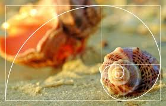

Golden Ratio Geometry
The Milky Way’s Spiral and φ

Pyramid of Giza and the Golden Proportion

The Spiral of Life — Nature’s Golden Pattern

The Taj Mahal and Divine Symmetry
The Golden Ratio, also known as φ (phi), is a mathematical constant that defines perfect proportions found in nature, art, and architecture. Its beauty has inspired designers, mathematicians, and artists for centuries — a bridge between math and aesthetics.
The Golden Ratio can be expressed as φ = (1 + √5) / 2. It defines a perfect relationship where the smaller part relates to the larger part just as the larger part relates to the whole. This ratio appears in the spirals of seashells, galaxies, hurricanes, and even in the proportions of the human body and DNA structure.
Artists such as Leonardo da Vinci and architects throughout history have incorporated φ into their masterpieces — from the Parthenon to the Mona Lisa — celebrating the universal balance between mathematics and beauty.